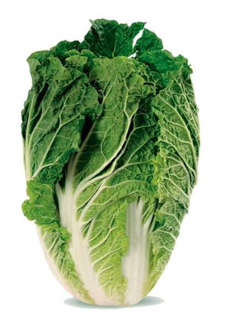

📖 Descrição
A couve chinesa (Brassica rapa) é uma hortaliça de folhas macias, crocantes e sabor suave. Muito utilizada em saladas, refogados e pratos da culinária oriental, é rica em vitaminas e minerais importantes para a saúde.
🌱 Cuidados
- Prefere solo fértil, rico em matéria orgânica e bem drenado.
- Regar regularmente, mantendo o solo úmido, sem encharcar.
- Cultivar em local com boa luminosidade ou sol da manhã.
- Adubar periodicamente para estimular folhas saudáveis.
- Retirar folhas secas e controlar plantas invasoras.
🌎 Origem
Originária da China, é cultivada há milhares de anos e faz parte da alimentação de diversos países asiáticos.
🐝 Atrai quais polinizadores?
Durante a floração, atrai principalmente abelhas, borboletas e outros insetos polinizadores.
🍽️ Parte comestível
Folhas e talos.
💚 Benefícios para a saúde
- Rica em vitaminas A, C e K.
- Fonte de cálcio, potássio e fibras.
- Fortalece o sistema imunológico.
- Contribui para a saúde dos ossos.
- Auxilia no bom funcionamento do intestino.
🌼 Curiosidade
A couve chinesa é muito utilizada na culinária oriental e é um dos principais ingredientes do tradicional kimchi, prato típico da Coreia.
🌍 Importância para o meio ambiente
Suas flores fornecem alimento para polinizadores e seu cultivo contribui para a biodiversidade da horta escolar, incentivando práticas agrícolas sustentáveis.
🌾 Época de plantio
Pode ser cultivada durante praticamente todo o ano, apresentando melhor desenvolvimento em temperaturas amenas.
📱 Acesse esta página pelo QR Code

Escaneie o QR Code para acessar esta página pelo celular.